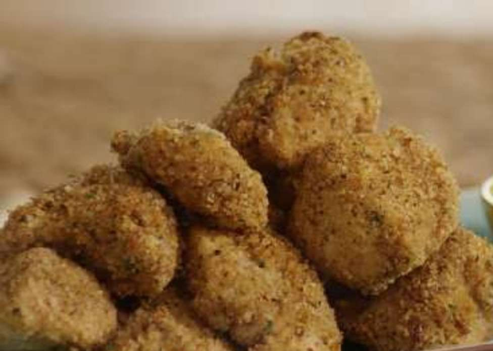

Herbed Chicken Nuggets

This Herbed steak Recipe has been passed down in my family for over 20 years.
It is made with love and great ingredients.
Follow the steps correctly and you will have a beautiful chciken nuggets
- Prep: 25 Minutes
- Cook: 15 Minutes
- Total: 40 Minutes
- Yield: 4 Servings
- Servings: 4